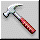
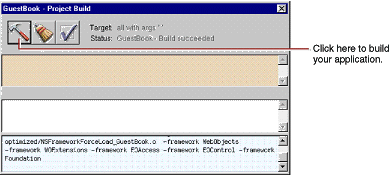
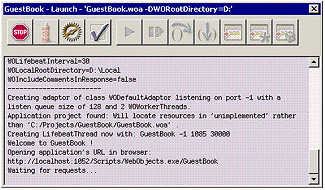

| PATH |

To build and launch your application, you use buttons in Project Builder's toolbar.

The Project Build panel displays the commands that are being executed to build your project. If all goes well, it displays the status message "Build succeeded."
The Launch panel displays a series of messages. If all goes well, you should see messages such as the following, which mean that your application is running successfully.
Your web browser (such as Netscape Navigator or Internet Explorer) should launch automatically and load the correct URL for your application.
If all goes well, your page should look like the one shown at the beginning of this chapter.
© 2001 Apple Computer, Inc.